The clean dataset did what the longer training never could. Best FID 7.72, against 12.14 for the previous cloud run — which then spent 2,800 more kimg getting worse.
Everything on this page comes from one snapshot, taken 3½ hours into a run that is still going. Nothing here is cherry-picked from a larger batch: the seeds were chosen before the images were seen, and each is shown as it came out.
Same architecture, same card, same transfer start. What changed is the data: the z9 re-fetch at native resolution, with overcast capped at 15% of the set instead of 43%.
| Run | Best FID | at kimg | Trained to | Spent past its peak |
|---|---|---|---|---|
| clouds z9, transfer — this run | 7.72 | 200 | still going | stopping at 600 |
| clouds z8, the previous run | 12.14 | 200 | 3000 | 2800 kimg ≈ €11 |
| land z8 | 12.71 | 1200 | 1236 | 36 kimg |
The shape of the orange curve is the argument for the early stop being armed on it: it bottomed at 200 kimg and has risen at every snapshot since — 8.72, 8.89, 9.84. The blue curve is the same story at a worse level, and last time nobody was watching, so it ran for another eleven euros of getting worse. FID measures distribution match, not beauty, so the number is a stopping instrument and not a verdict on the pictures. The pictures are below.
Top row is real satellite tiles from the training set. Middle is the network at this snapshot. Bottom is the pretrained network it started from, before it had seen a single cloud — it generates dogs, because that is what LSUN Dog contains.
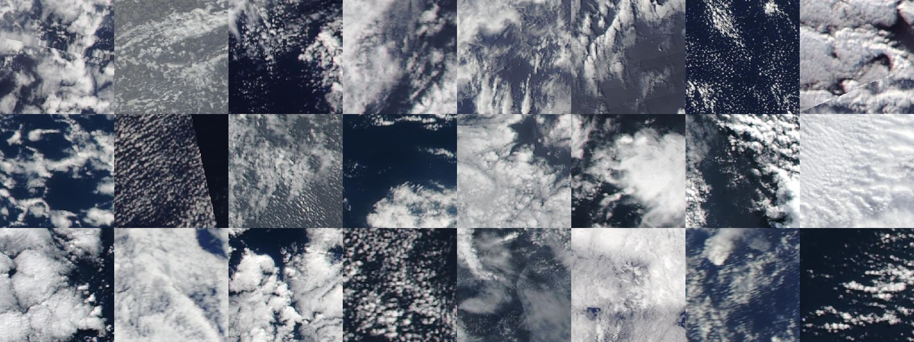
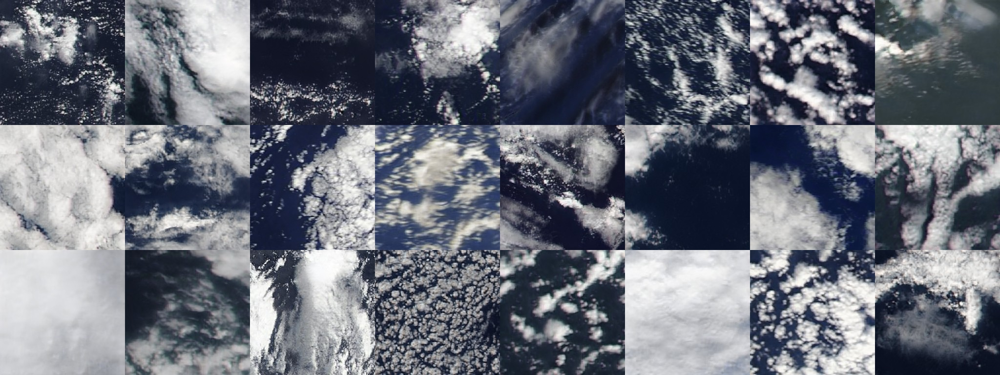
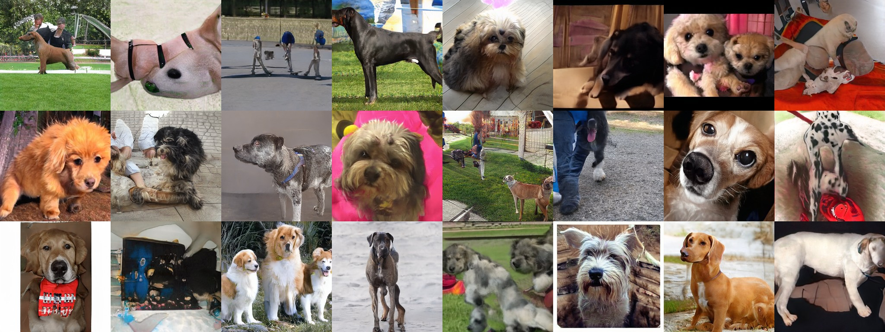
What to look for in the middle row: open-cell convection, cloud streets, the sharp edge where a deck ends, and overcast that still has structure in it rather than being flat white. What is missing: the network has no idea that cloud shadows should fall consistently, and at this size you cannot easily tell.
Each is a single continuous generation at the size stated, not a mosaic. Several latent codes occupy different regions and the network paints the transitions between them.
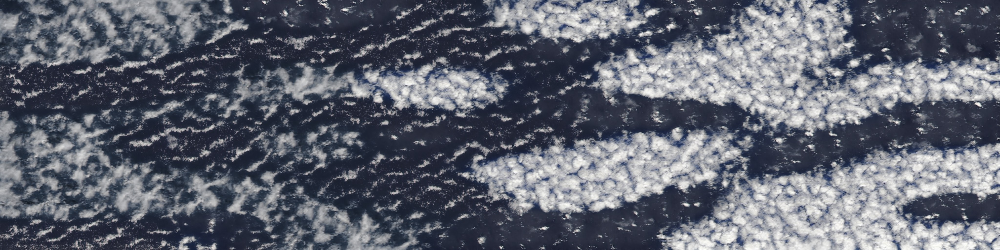
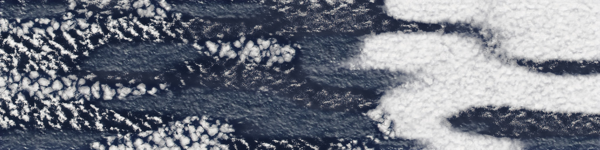
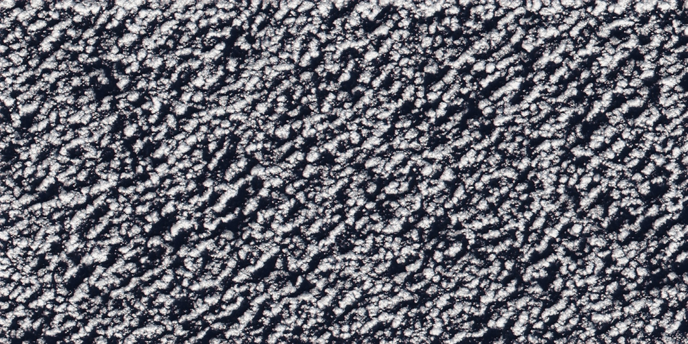
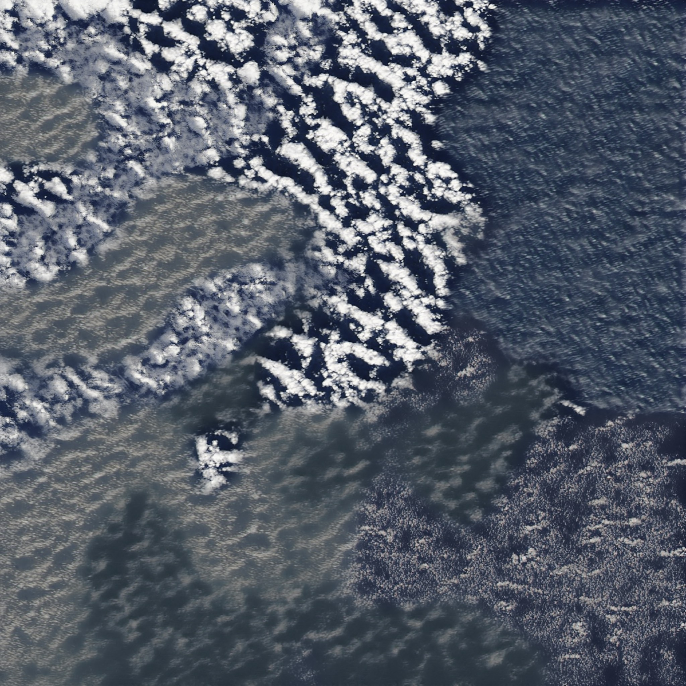
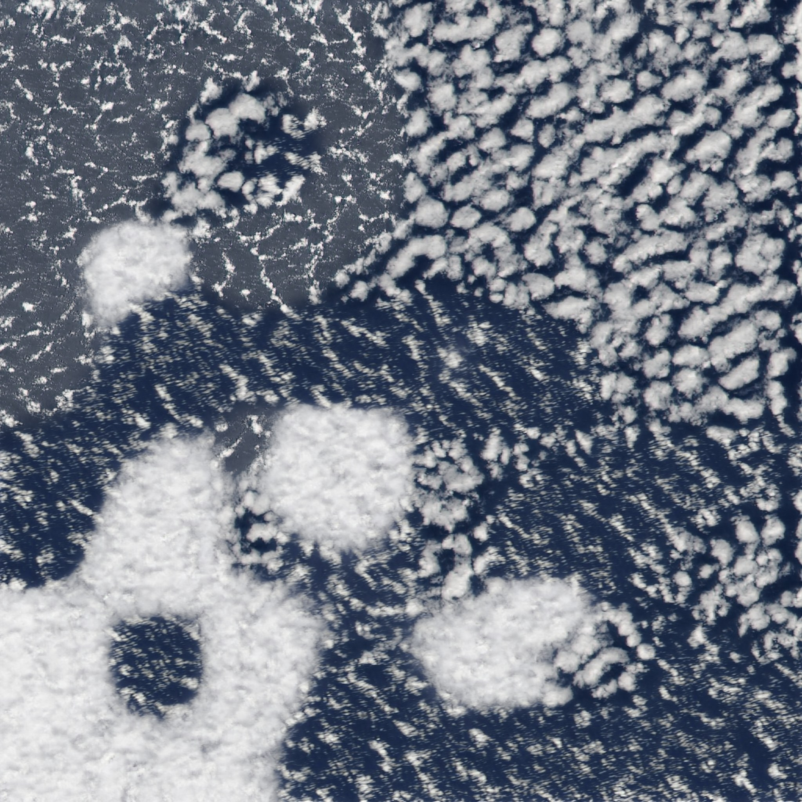
Blending regions by nearest-centre makes the boundary between two of them a straight line. On a canvas of six regions on a regular grid, those landed as visible vertical and horizontal edges — the one thing that reads instantly as fake in a sky.
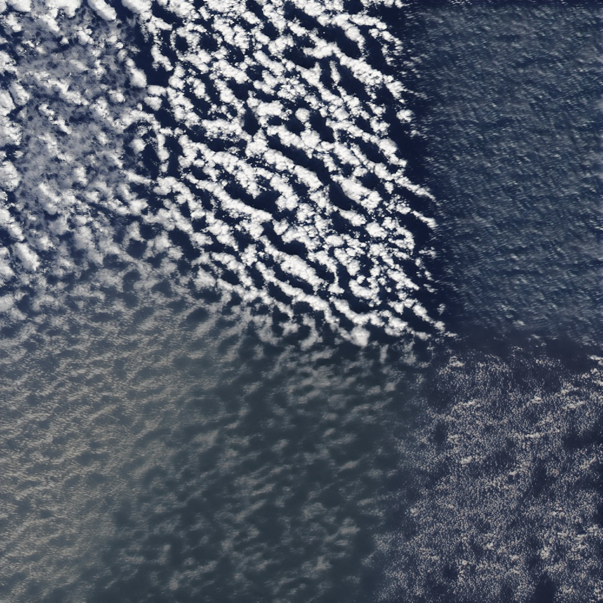
I built a line detector to prove the seams were gone. It took three rebuilds to get past its own controls — each rebuild caught by a control catching a different error — and it still reports "no line" on a canvas where the seams are plainly visible. Every synthetic control I wrote spanned the whole canvas; a real region boundary spans about a third of it, inside an image already full of cloud edges at every angle. The control matched the kind of defect but not its shape. So the pair above is a controlled visual comparison, one parameter changed, and the judgement is yours rather than a number's.
FID measures how closely the generated distribution matches the training data, which is not the same as beautiful. The early stop killed this run at 600 kimg, but every snapshot up to then is still on disk, so the choice of which network to keep can be made by eye. Same seeds, same settings, three snapshots:
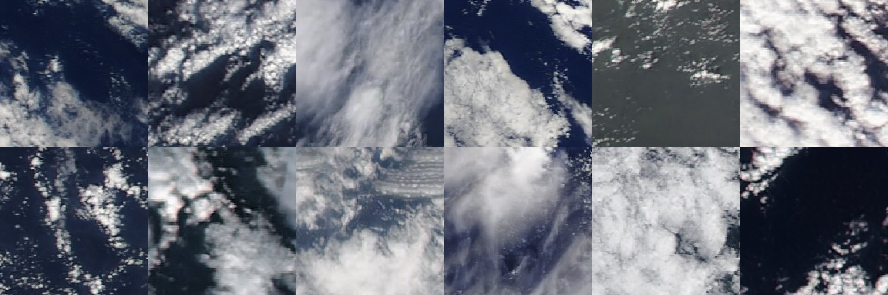
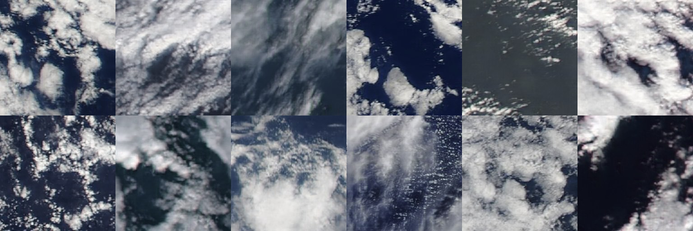
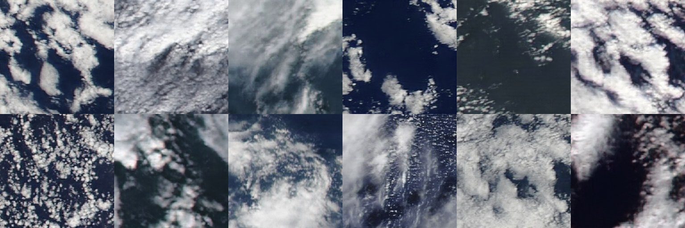
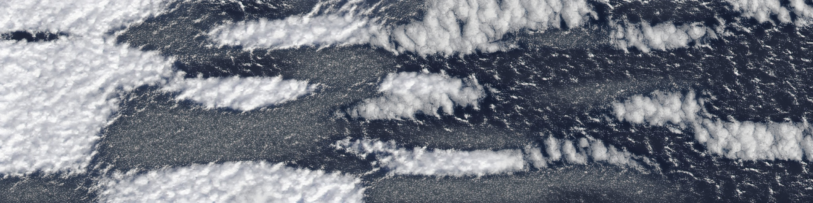
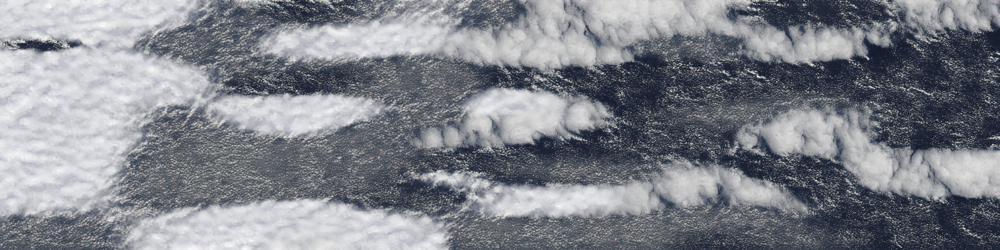
My read, offered as one opinion: the later snapshots come out softer rather than more varied. At 200 the small cumulus and the edges of cloud streets are crisp; at 400 and 600 the same seeds are smoother, with one exception — the open-cell field bottom-left only turns sharp at 600. Another session training on terrain saw the opposite, more variety later, and both can be true: variety of kinds of scene is a different thing from sharpness of texture. If you prefer a later snapshot, that is a reason to raise the early stop's patience on beauty-led runs.
Three questions where my opinion is worth less than yours.
Look at the pair above at full size. If the boundaries still read as boundaries, the next move is fewer regions on a bigger canvas rather than more blending.
0.7 gives plausible skies, 0.8 gives stranger and more varied ones. The panoramas above are labelled. Which way do you want it pushed?
The cloud-fraction bands set the real overcast cap, and those are aesthetic calls I can't make for you. It's the one thing gating the next dataset build.